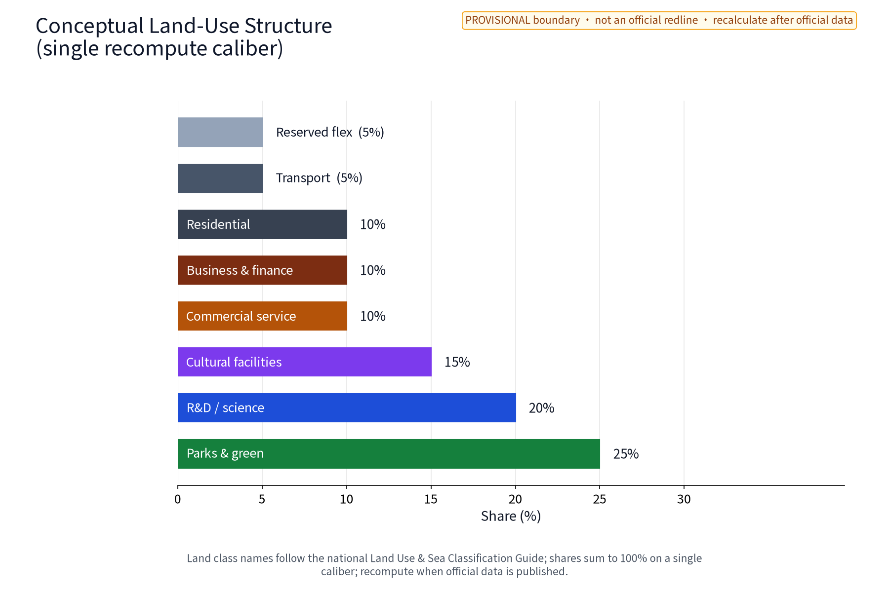

PAR·JZ Participation Loop (Jing-Zhang Public Prototyping Commons)
PAR·JZ is the sole primary brand. Z1 Prototype School, Z2 Reversible Test Yard and Z3 Service Loop Station are three nodes under it, not sub-brands.
Learn → prototype → shadow-test → human review → publish/withdraw → return knowledge; this page is for discussion, not a statutory plan, approval or professional design.
Overview map
The three nodes interface respectively with Zhongzhiyuan AI Acceleration Area, Beijing AI Origin Community and Dazhongsi AI Industry Cluster. Geometry is provisional and locations are not official.

Three-level scope, three positionings, five functions
Coordinated research → overall design → key-area Z1/Z2/Z3 and Xiaoyuehe test corridor.
Centennial Jing-Zhang Culture Belt; Metropolitan AI Life Experience Belt; AI Integration Innovation Belt.
Full-stack innovation; world-class ecosystem; AI+ scenario enablement; smart AI vitality city; global AI governance voice.
Key areas, land-use zones, slow traffic, blue-green public space, buildings, renewal projects
Z1 Prototype School = Zhongzhiyuan interface; Z2 Reversible Test Yard = AI Origin interface; Z3 Service Loop Station = Dazhongsi interface.
Concept shares express test allocation only; no statutory use or approval conclusion is claimed.
Walking, accessibility and low-speed connection first; no road, rail, bridge, tunnel or municipal engineering conclusion.
Jing-Zhang heritage park green belt and reversible components form the experience skeleton.
Retain and adapt first, demountable components; structure, fire, tenure and capacity remain unknown/to_verify.
Annual rhythm of pilot, review, pause and exit; no construction project is promised.
Three nodes: plan, section, user journey
| Node | Plan boundary | Section/interface | Journey deliverable |
|---|---|---|---|
| Z1 Prototype School | Entry–learning–evaluation–version archive | Information board–passage–learning table–mentor | Submit sample → explain → reproduce → archive |
| Z2 Reversible Test Yard | Issue desk–shadow zone–human gate–paper return | Passage separated from test face; human bypass | Raise need → try/pause → appeal/exit |
| Z3 Service Loop Station | Inquiry–service–public–withdrawal | Information face separated from passage; no personal display | Choose service → duty review → feedback/opt-out |
Intake → anonymize → model/rule draft → human gate → small test → versioned receipt → publish/appeal/withdraw → revise or exit.
Core metrics
Machine values are unique to metrics.json; human-facing surfaces show reduced precision only and never present the provisional model as surveyed precision.
Visual figures




AI scenarios
Ten scenario cards, three test protocols and six personas use an input → model/rule → human gate → output → owner → metric → record → stop/exit loop; only public or authorized aggregate data is allowed, with no face recognition, individual tracking or automated decisions.
Task coverage
compliance_matrix.json maps the announcement, three-level scope, three positionings, five functions, three areas/two wings and agent.1–agent.6; design_depth_matrix.json maps professional depth; bilingual figures and PDFs use the same visual positions.
Self-check status
Static offline page; no remote fonts, scripts, map tiles, analytics or tracking. Four-gate results are written to self_check.json.
Sources
Sources, case use and asset rights are recorded in sources.json and report/copyright_statement.md; unverified facts are marked unknown/to_verify and all figures are package-authored concept graphics.
Assumptions
Boundary, tenure, heritage/green/blue lines, transport, municipal services, fire, accessibility, operating resources and performance baselines are provisional or unknown/to_verify; recompute using the same formulas when official material arrives.
This page and the PDFs are concept advice and reference material for professional teams to develop; they are not statutory planning, approval or engineering conclusions.
PAR·JZ | community discussion and review use | self-check: self_check.json